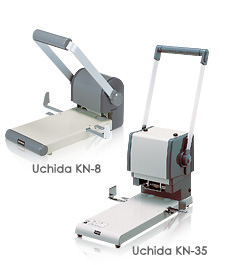

PRODUCTOS
por referencia
Uchida KN-8/KN-35



Gracias al largo reconocimiento de las herramientas de perforado y los trabajos en perforadoras electricas las Ponchadoras KN han apadrinado exitosamente a todos los usuarios en el mundo. La suavidad es realizada gracias al hacero HS de alta dalidad y las puntas recubiertas con teflon las cuales proveeen huecos sin estrés haciendo que los trabajos para cada operador sean eficientes y seguros.
Capacidad de ponchado (64g/m2):390 hojas (KN-35) / 160 hojas (KN-8)
Patrones de perforado :2 huecos, 4 huecos 80mm (KN-35) / 2 huecos (KN-8)
Ultra suavidad
Ficha técnica
| Producto / Modelo | KN-8/KN-35 |
| Tipo | De escritorio |
| Capacidad maxima de ponchado | 390 hojas (KN-35) 160 sheets (KN-8) |
| Margen anterior | 12.7mm (fijo) |
| Diametro de perforado | 6.0mm dia |
| Calidad de las piezas del diametro | Acero HS con recubrimiento de teflon |
| Selección del perforado | 2 huecos 80mm, 4 huecos 80mm (KN-35)
2 huecos 80mm (KN-8) |
| Tamaño de la tabla | 166W x 344Dmm (KN-35) 136W x 280Dmm (KN-8) |
| Dimensiones | 218W x 418D x 536Hmm (KN-35) 163W x 348D x 375Hmm (KN-8) |